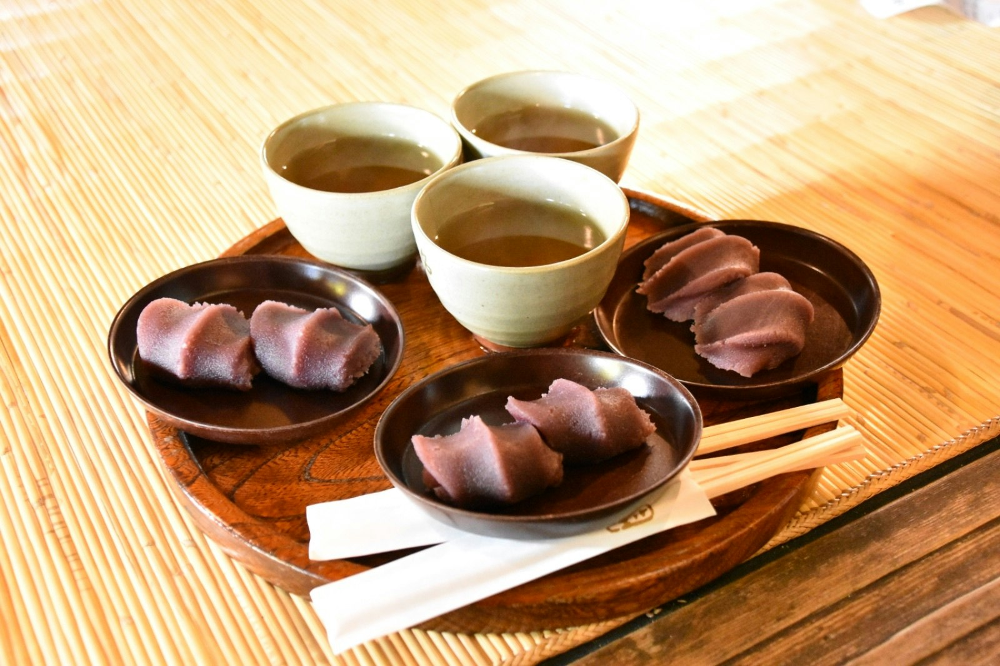
Akafuku Mochi - Um doce japonês tradicional, ou wagashi, que consiste numa base de bolo de arroz (mochi) firme, mas macio, coberto com pasta de feijão vermelho doce (anko ou koshi-an).
R$ 20,00
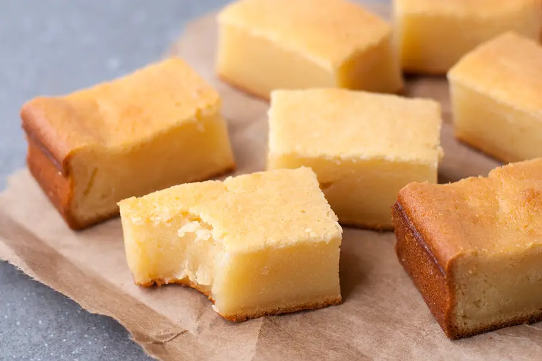
Butter Mochi - Um bolo feito de leite de coco, farinha de arroz glutinosa, açúcar, manteiga e ovos. É uma sobremesa popular na culinária havaiana, onde é mais popular do que os brownies no continente americano.
R$ 22,00

Daifuku - um doce japonês tradicional composto por uma massa macia de arroz glutinoso (mochi) recheada com anko (pasta de feijão vermelho adocicada)
R$ 18,00
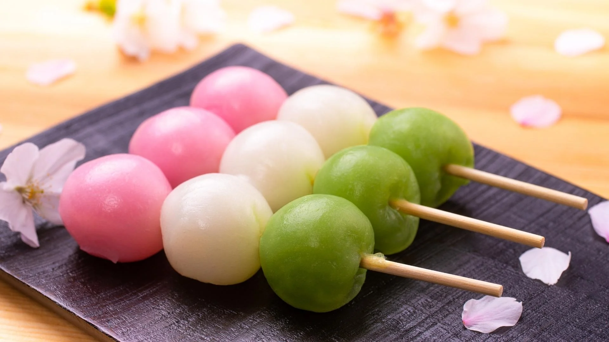
Dango - Um doce japonês tradicional, semelhante a um bolinho, feito com farinha de arroz e geralmente servido em espetos de bambu com três a cinco unidades
R$ 9,00
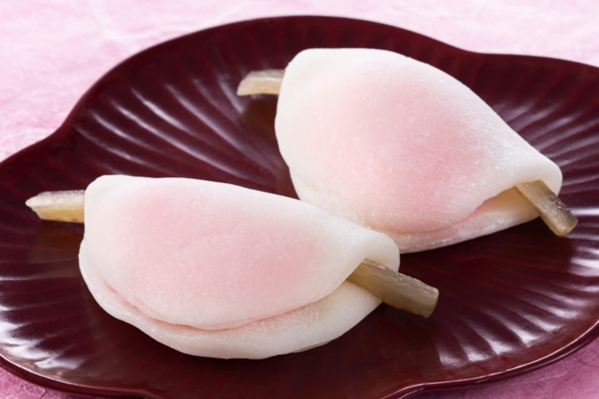
Hanabira Mochi - Um doce japonês tradicional, ou wagashi, comido no início do ano, especialmente durante a primeira cerimônia do chá do Ano Novo (Hatsugama)
R$ 25,00
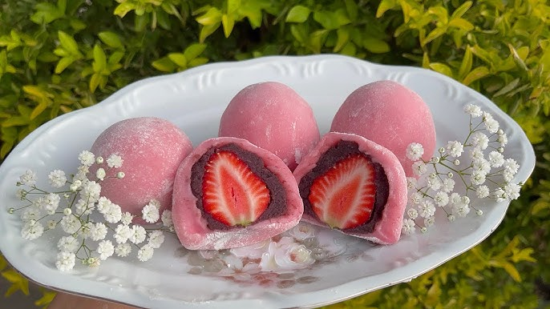
Ichigo Mochi - Um doce japonês feito com um bolinho de mochi (bolinho de arroz doce) macio, recheado com pasta de feijão vermelho (anko) e um morango inteiro
R$ 19,50
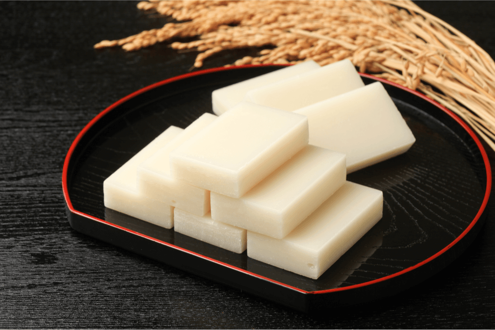
Kiri Mochi - Uma versão seca e cortada em tabletes (blocos retangulares) do mochi, o tradicional bolo de arroz japonês feito com arroz glutinoso.
R$ 28,00
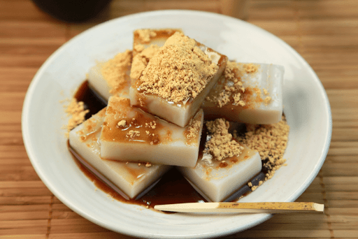
Kuzu Mochi - uma iguaria japonesa, um tipo de mochi gelatinoso e translúcido, feito de amido de kudzu (kuzuko), não de arroz como o mochi tradicional.
R$ 28,00
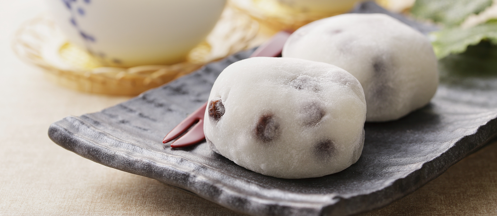
Mame Daifuku - um doce japonês tradicional (wa-gashi) que consiste num bolinho de arroz glutinoso (mochi) recheado com pasta de feijão doce (anko), onde feijões azuis (kuromame) ou feijões vermelhos são misturados na própria massa do mochi
R$ 26,00
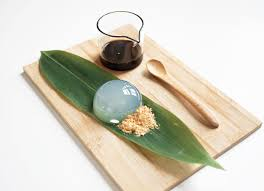
Mizu Shingen Mochi - uma sobremesa japonesa translúcida, em forma de gota, feita de água mineral e agar-agar (um gelificante vegetal), servida com kinako (pó de soja torrada) e kuromitsu (xarope de açúcar mascavo).
R$ 31,00
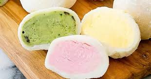
Mochi Gelado - um doce japonês, consistindo num pequeno bolinho de arroz glutinoso (mochi) que envolve um recheio cremoso de sorvete, disponível em diversos sabores como morango, chá verde e baunilha.
R$ 10,00
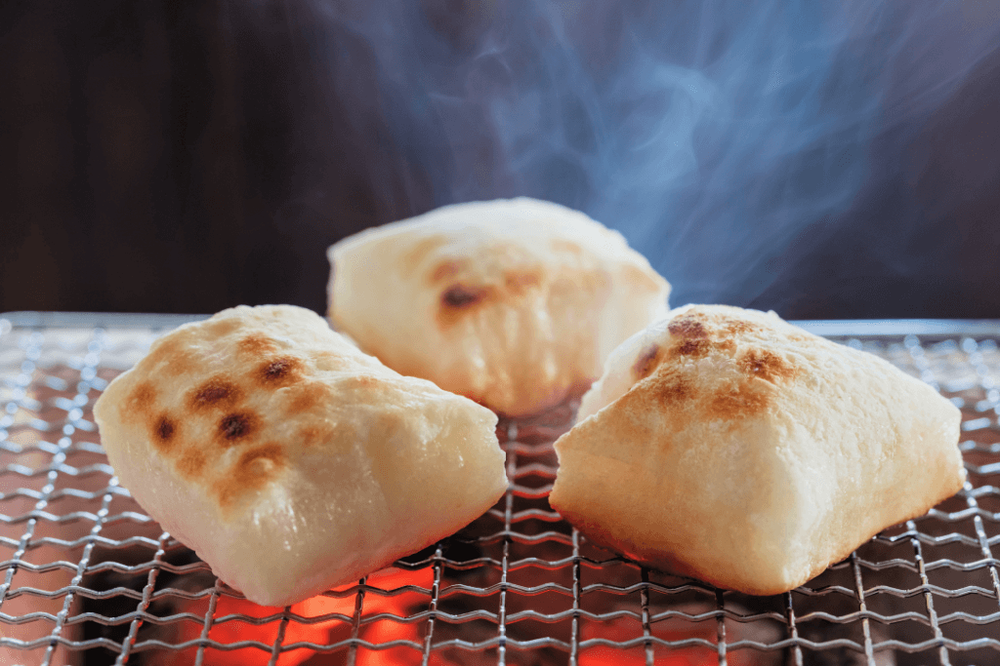
Yaki Mochi - um bolo de arroz mochi ou socado grelhado ou assado. Tradicionalmente, é preparado em uma pequena churrasqueira a carvão , mas, atualmente, uma churrasqueira a gás também pode ser usada.
R$ 20,00